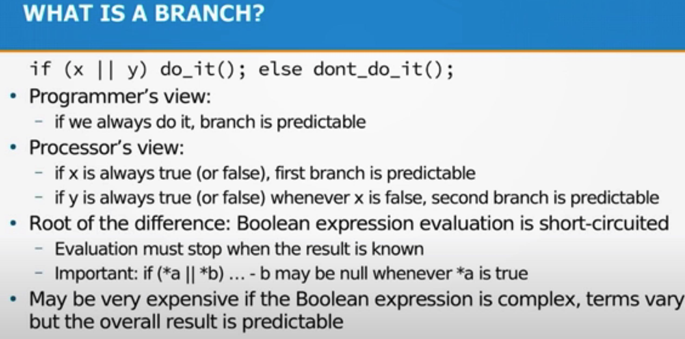

Branchless Programming in C++ - Fedor Pikus - CppCon 2021
https://youtu.be/g-WPhYREFjk?t=2489
对于 `if(x || y) {A} else {B}` 这样的分支判断来说，程序员和机器的视角是不同的，机器视角是
- if x -> A
- else if y -> A
- else -> B
所以如果x, y本身没有特别好预测性的话，那么对于机器来说分支预测效果也不会太好。 branchless要求将 `z = x||y` 预先计算出来，然后使用 `if(z) {A} else {B}` 这样的方式来改写判断。
